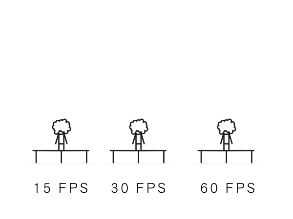
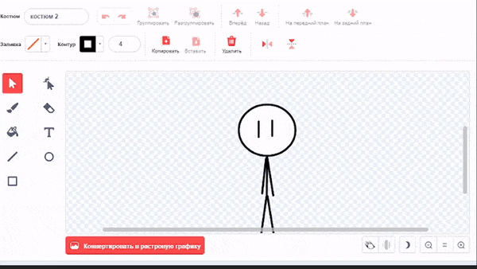

О бо мне:
Меня зовут Никита Белькевич (Известный под псевдонимом Somario06). Я занимаюсь созданием анимаций.
Я поведаю о том как их создавать.
Лично для себя я предпочёл использовать для создания анимаций такую программу как Scratch.
Многие люди считают, что для создания необходим Adobe Animate, но это не так. Для создания анимаций можно использовать даже Paint. Однако вам понадобится очень много терпения и желания.
Как создать анимацию?
- Зайдите на сайт Scratch
- Зарегистрируйтесь или ввойдите в аккаунт
- Создайте проект
- Начните творить
- Завершите ваше творение
- Запишите вашу анимацию на OBS
Как работает моя анимация.
Scratch — это язык "програмирования". Его код состоит из блоков.
Пример работы такого кода.
В скретче нет кадров анимаций.
Вместо них я использую костюмы. Каждый костюм можно переключать с определенной частотой. Для этого нужно поставить блок "переключиться на первый костюм", затем "ждать" (в моём случае 1 секунду, однако значение можно изменить), а потом повторить. При создании анимации важно учитывать fps.
FPS — Количество кадров в секунду.

Если значение в блоке "ждать" равно 0.1 секунды, то мы, переключая костюмы, можем добиться частоты в 10fps.Если значение в блоке "ждать" равно 0.01 секунды, то мы, переключая костюмы, можем добиться частоты в 30fps.
(30 fps это максимальное значение fps в Scratch в стандартном режиме работы).
Теперь давайте создадим что-то
>
Для начала нарисуем персонажа.
Теперь нужно создать несколько кадров анимаций.
Для того чтобы не рисовать персонажа заново, мы дублируем костюм.
К примеру сделаем так чтобы в стикмана кинули ведро.
Для этого стикману нужно повернуться.

В Turbowarp (модифицированной версии Scratch) есть функция отображения предыдуших костюмов.Для Scratch нужно будет скачать расширение Scratch Addons.

Теперь наш персонаж поворачивается.
Теперь нужно будет взять картинку ведра и загрузить её в скретч.
Теперь я напишу код. Его смысл бувально заключается в том что-бы идти к персонажу.
Также для создания комичной ситуации, я заставлю его переворачиваться на 30 градусов.
Теперь вы можете увидеть запустить анимацию, нажав на флажок.
Например на пакет моего знакомого.

На последок стоит сказать, что можно объединять скретч и программы для монтажа.
Записывая на зелёном фоне. К примеру вот анимация, в которой я использовал данный способ.